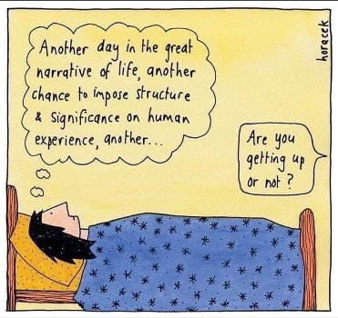

I want to create vacancy in my life.”
-- Nicholas Wilton
“The feeling we have of betraying some mission we were mandated to fulfill, and being unable to fulfill it. And then coming to understand that the real mandate was to not fulfill it, and the deeper courage was to stand guiltless in the predicament in which you found yourself."
--Leonard Cohen
When I was young, every report card with my name on it said some version of, “Judy needs to be more motivated. She needs to work harder and apply herself, in order to reach her full potential.”
Supposedly I had better in me.
Though exactly where it was hiding was unclear.
Still, the grownups seemed to agree that somewhere my greatness was waiting.
All it needed was the right behaviors from me - more homework and a better more well-behaved attitude towards my teachers and parents- to unleash it.
Then I’d match their dream of what a child should be and do. Then I could be the max of whatever it is I was.
Fast forward to 4 or 5 decades later, and it’s starting to look like there isn't better in me.
It looks like my full potential is never coming.
It looks like this unachieved potentiality is the best Judy that’s ever going to be.
Hopefully I can get over it.
Along with all those others who, though grown up and living their lives, still suffer about not bringing the “best” of themselves.
Work, sports, arts, parenting, health, spirituality.
No matter what the area of life, we’re indoctrinated into the myth of full potential.
OK is never good enough for us. We’re far too special to settle for ordinary.
We have to be our best. We have to be the best.
Whatever that is.
Because really, what even is this full potential that we're supposed to strive for, for decades?
Is it a big house, a job title, a certain amount in the stock market? Is it a Pulitzer, an award, a medal? Is only the highest level of enlightenment acceptable?
And when, if ever, does potential finally become full and enough?
For instance, has Simone Biles achieved her Full Best? Surely there’s more we can wring out of her.
It seems we never actually get there.
Or maybe there is no ‘there,” and it’s simply a matter of comparison.
Because “best” seems to be defined by what others do. If we surpass others, then we have achieved our best.
Meaning potential is graded on a curve, and is not actually a finite, end-goal thing in us.
It’s in them. Our full potential depends on everyone else not reaching their best.
All that is needed is for everyone else not to achieve more than we do.
Yay!
And then, just to make this well-learned game even more fun,
when we don’t leap off the couch eager to work work work towards some goal goal goal, to make ourselves better better better,
we and everybody else call us “unmotivated.”
Yes, weirdly, oddly, we’re unmotivated to work all our lives, even in areas that are supposed to be fun, for a mythological best or potential that doesn’t exist.
Instead, aiming for potential is so exhausting, it makes a person need a nap.
The nagging becomes a weight so heavy that we can't get off the couch.
Circularly producing exactly the result we don’t want. Perpetuating self-berating and self-hatred. Ensuring we’re not enough and never will be.
Sure, leap out of bed with eagerness for that joy.
Meanwhile, how much perfectly good, perfectly adequate life is missed while we hound ourselves to be better?
And how do we not notice that, whether working, or in bed, or watching tv, or even staring at the ceiling drooling,
This right here is already, and has always been, the very best we can be.
As is.
We can't be more than we are.
We can't do more than we can.
Luckily, existence doesn’t, and hasn’t ever, needed a thing more from us.
Couch or boardroom- this is it.
Our best, fullest potential to be, to live, to exist- right here, already.
Not later. Now.
We might enjoy it.
Because this simply is
the best
there is.
Click here to watch Judy's Buddha at the Gas Pump interview
"Maybe
Just maybe
Life unfolds
Relentlessly
With no holy plan
Maybe
It is sacred
Just as it is
Its power and innocence
Require no justification
Its perfection requires no meaning
Maybe nothing
Means anything
Other than what the Rose
Means
When it blooms
It means
Here I am
Here I am
Here I am."
--partial "Senseless Perfection"
by Maya Luna
"It is a serious thing
just to be alive
on this fresh morning
in the broken world."
–Mary Oliver
